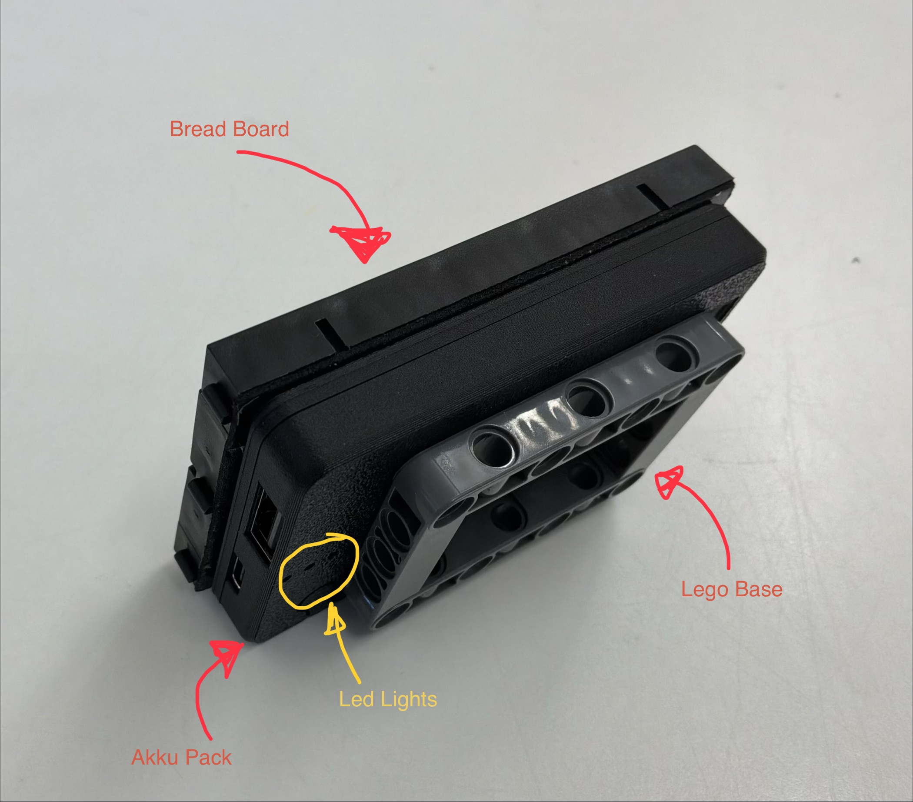
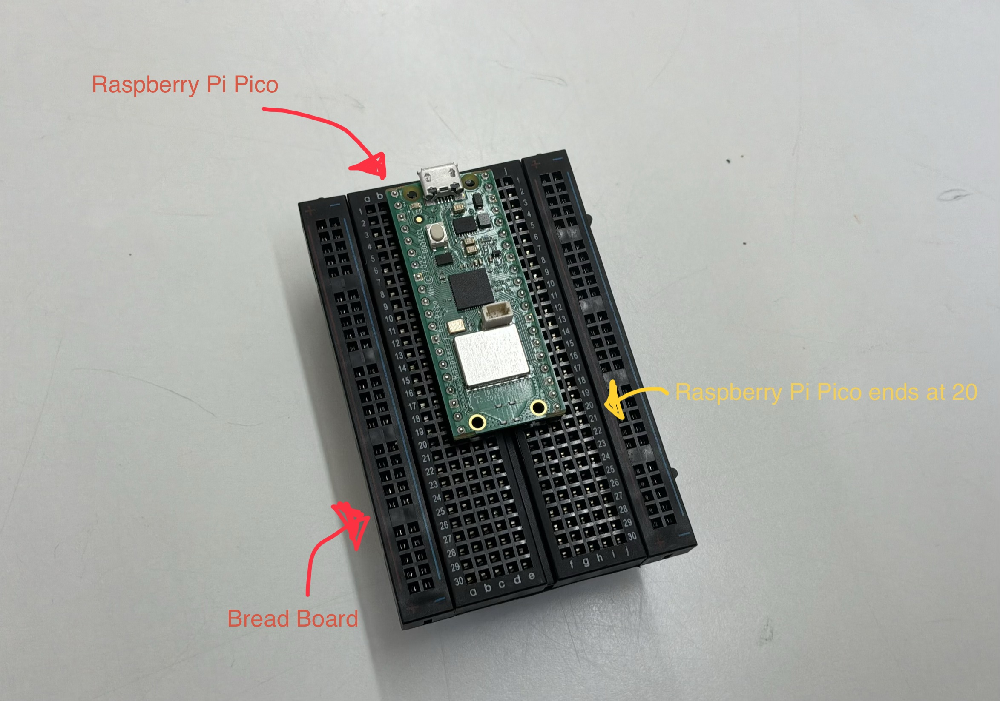
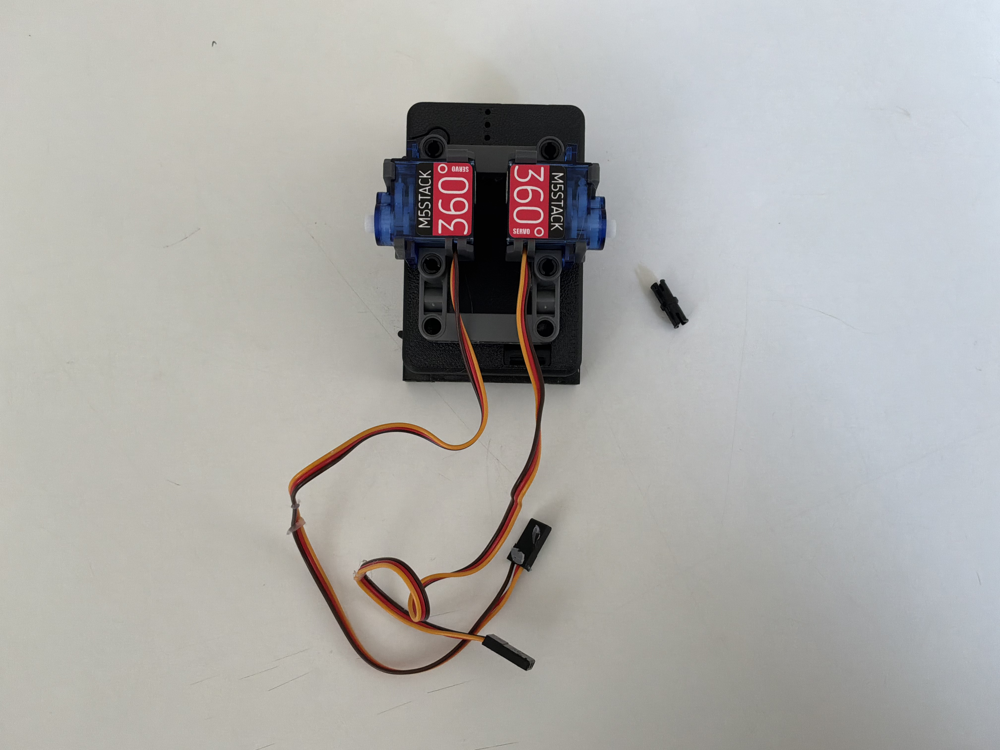
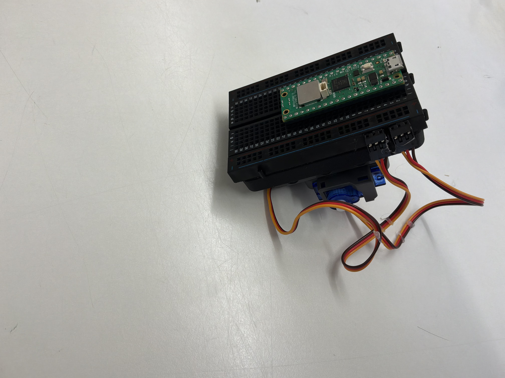
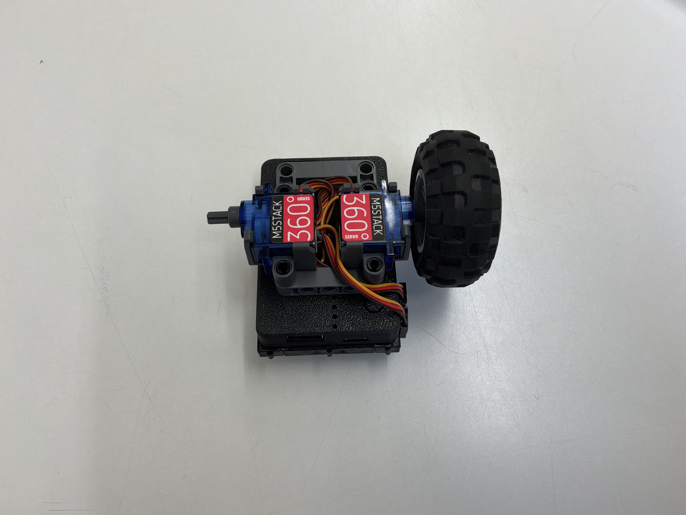
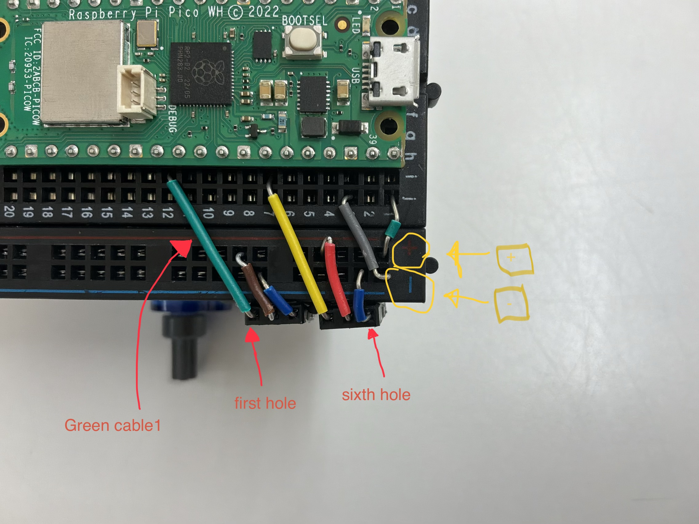
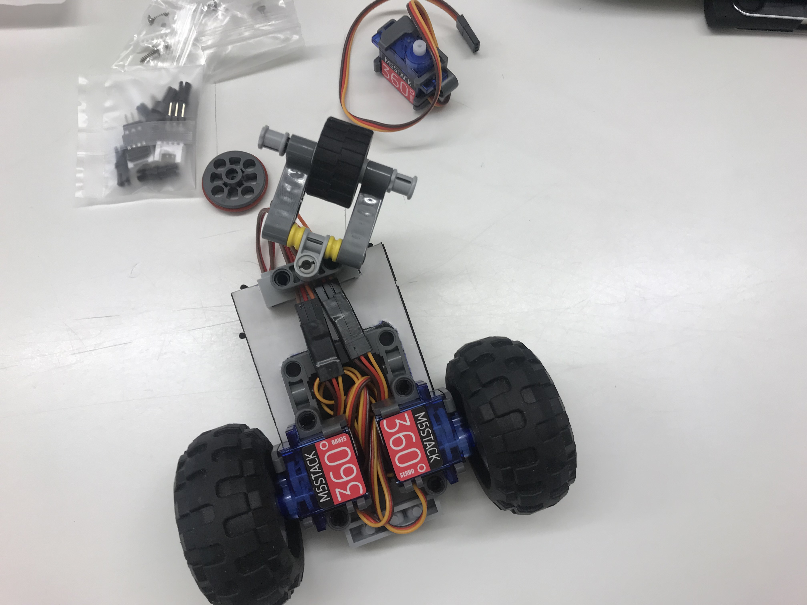

The BreadSnowBot is a clever half-size breadboard robot based on a Raspberry Pi Pico Micro Controller, and two servo motors which work with a recharcheable battery pack.
This is a step-by-step guide on how to build the BreadSnowBot all by yourself.
This is the perfect opportunity to build your very first robot. The difference between the BreadSnowBot and usual robots is that you have to program everything from the very start. This will help you to really understand how programs and robots work.
If you follow the instructions below, you’ll have your very first robot in less than a week (if you work a normal amount of time on it).
Unpack your servo kit (360) and your breadboard.
Take off the plastic from the self-adhesive breadboard and stick it on the battery pack. Then glue the Lego base onto the battery pack. Then you have one glued-together block that contains the battery pack, the breadboard, and the Lego base.
Be careful and DON’T glue the breadboard onto the battery pack LED lights.

Stick the Raspberry Pi Pico Pinout onto the breadboard, leaving two squares empty on the left and on the right. The Controller should be between 1-20 and C-H.

Connect the 2 servos (from the servo kit) to the Lego base with 2 black Lego pins (see material list). Click them onto the side of the Lego base where the LED lights are.

Glue the two jumper cables to the right front side of the breadboard. I recommend doing this with hot glue, please be careful that you don't burn yourself. The cable end has two sides; don't put hot glue onto the side where you can see metal. So glue the normal side onto the breadboard.

Stow away the cables between the servos. And put the wheel axis pins onto the servo (on each side), then add a wheel on each side.

Wire the jumper bridge, this step is very crucial for your robot. It's very important that you complete this step with a lot of patience.
Choose 4 jumper bridges and stick them into the following places on the breadboard. You now need to make bridges between the breadboard and the ends of the jumper cables we glued onto the breadboard in step 4. Make sure the cables really stick well into the breadboard.

Wire the ultrasonic sensor as shown in the picture and install the switch. Load the code onto the Pi Pico.

Build a third Lego wheel onto the Lego base. There are many ways how you can do this step. It is very individual and makes your robot special. Siplest way: Use the "Pololu Ball Caster" from the pasic parts list.